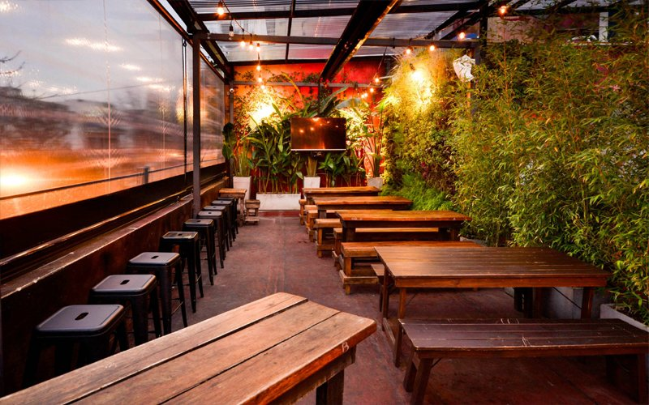

Luyaba es un pequeño pueblo ubicado en el Valle de Traslasierra. Su nombre proviene de un vocablo comechingón que surge de las crónicas de los colonizadores que durante el siglo XXI fueron llegando a estos territorios. Aquí, hace muchos años nuestro abuelo Gumersindo Carranza propuso una fonda llamada El Viejo Algarrobo, en su propia casa ofrecía comidas caseras y bebidas a los viajeros así como charlas e historias. Muchos años después, recuperando ese anhelo de un espacio donde cobijar la palabra y compartir la mesa nació el proyecto La Vieja May, reconociendo en su nominación a nuestra madre, maestra rural de Luyaba y amante de sus horizontes.
NUESTRA HISTORIA
NUESTRA META
La Vieja May esta pensada como una cervecería artesanal que incorpora a su espacio la tranquilidad y la lentitud de lo pueblerino, invitando a quedarse y descansar la mirada sobre las sierras. Un lugar que permita a los clientes conectar con la naturaleza y distanciarse un rato del ajetreo de la cotidianidad, que permita un espacio para divertirse al mismo tiempo que reinventarse y descubrirse. Invitamos a los clientes a aventurarse en la experiencia completa de La Vieja May, disfrutar de nuestra carta y llevarse un recuerdo que dure por mucho tiempo.
